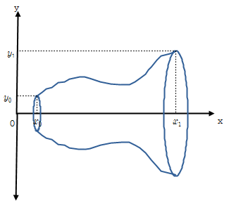
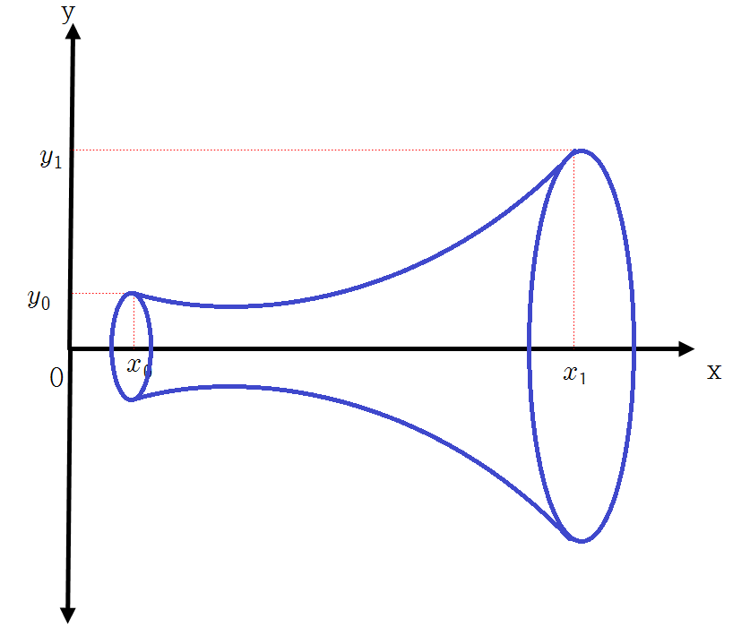
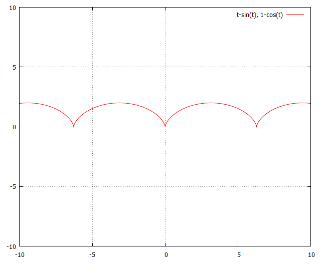
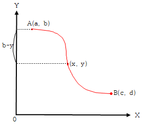

(x _{0} ,\,y _{0} ),\,(x _{1} ,\,y _{1} )를 연결하는 곡선 중 x 축을 중심으로 회전했을 때 최소 표면적을 만드는 곡선을 찾아라.
(x _{0} ,\,y _{0} ),\,(x _{1} ,\,y _{1} )를 연결하는 곡선을 x 축을 중심으로 회전하면 다음과 같은 원통이 그려진다.
이제 이 원통의 표면적을 최소화하는 곡선을 구하는 것이다.

(풀이)
반지름이 r 인 원주의 길이는 2 \pi r, 높이가 h 인 원통의 표면적은 2 \pi rh
따라서 문제는 다음과 같다.[2]
min\, \int_{x _{0}} ^{x _{1}} {2 \pi y \sqrt {1+y^{'2}}} dx
s.t \,y(x _{0} )=y _{0} \,,\,y(x _{1} )=y _{1}
f\,=\,y \sqrt {1+y^{'2}}, y'\,=\, \frac{dy}{dx}
f _{y'} = \frac{yy'}{\sqrt {1+y^{'2}}}
f가 x와 관계가 없으므로 벨트라미항등식을 이용하는 것이 편리하다.
f-y ' f _{y ' } \,=\,y \sqrt {1+y^{'2}} - \frac{yy^{'2}}{\sqrt {1+y^{'2}}} =C _{1}, C _{1}는 상수
⇒ \,y(1+y^{'2} )-yy^{'2} =C _{1} \sqrt {1+y^{'2}}
⇒ \,y=C _{1} \sqrt {1+y^{'2}}
⇒ \,y ^{2} =C _{1} ^{2} (1+y^{'2} )
⇒ \,y ^{2} -C _{1} ^{2} y^{'2} -C _{1} ^{2} =0
이 미분방정식을 풀기위해 변수분리법을 사용한다.
y^{'2} = \frac{y ^{2} -C _{1} ^{2}}{C _{1} ^{2}}
⇒ C _{1} y ' =(y ^{2} -C _{1} ^{2} ) ^{\frac{1\,}{2}}, (∵ 거리이므로 양수)
⇒ C _{1} \frac{dy}{dx} =(y ^{2} -C _{1} ^{2} ) ^{\frac{1\,}{2}}
⇒ \frac{C _{1}}{\sqrt {y ^{2} -C _{1} ^{2}}} dy\,=\,dx
양변을 적분 하면
\int \frac{C _{1}}{\sqrt {y ^{2} -C _{1} ^{2}}} dy\,=\,x+\,C _{2}, C _{2}는 적분상수
⇒ c\,\cosh^{-1} \left( \frac{y}{C _{1}} \right) \,+\,C _{3} \,=\,x\,+\,C _{2} .................[3]
∴ y=C _{1} \,\cosh ( \frac{x+C _{4}}{C _{1}} ), where C _{4} \,=\,C _{2} \,-\,C _{3}
C _{1}과 C _{4}는 \,y(x _{0} )=y _{0} \,,\,y(x _{1} )=y _{1}를 대입하여 구함
\cosh x의 그래프는 포물선 형태이다.[4] 이런 형태의 곡선을 ‘catenary’ 라 부른다. 이는 두 기둥 사이에 체인을 연결했을 때 생기는 모양을 연상하면 된다. 따라서 최소표면적 원통의 모양은 대략 아래 그림과 같이 나팔모양을 하고 있다. 직관적으로 생각했을 때 최소표면적을 이루는 곡선의 모양이 직선일 것이라고 예상되지만 결과는 그렇지 않다.

(풀이끝)
중력이 있는 수직 평면상에 다른 두 점 A(x _{0} ,\,y _{0})와 B(x _{1} ,\,y _{1})가 있다고 하자(B가 A보다 아랫 쪽에 있다고 가정). x축의 A, B 사이의 거리, y축은 높이를 의미. 이제 A와 B를 잇는 실을 걸고, 그 실을 따라 움직이는 물체가 A에서 B에 도달하는 경우, 도달 시간이 최소가 되도록 하는 실이 이루는 곡선의 모양을 구하라.
(풀이)
중력이 관계된 문제이므로 이 문제를 풀기 위해서는 물리학적인 기본지식이 필요하다.[6]
(v ; 속도, t ; 시간, s ; 이동거리, g ; 중력가속도, m ; 질량, h ; 높이)
이동거리(s) = 속도(v) × 시간(t) 이므로
s=vt ⇒ v= \frac{ds}{dt}
역학적 에너지보존의 법칙에 따라 운동에너지와 위치에너지는 같으므로
mgh = \frac{1}{2} mv ^{2}
⇒ v= \sqrt {2gh}, (v는 양수)
s는 곡선을 그리는 호의 길이
(x, y) 좌표평면상에서 높이를 y, 수평거리를 x라 하면 호의 거리는 피타고라스의 정리에 의해
ds= \sqrt {dx ^{2} +dy ^{2}} = \sqrt {1+( \frac{dy}{dx} ) ^{2}} dx
높이가 y이므로 v= \sqrt {2gy}
곡선을 따라 내려올 때 걸리는 시간은
t= \int_{\text{curve}} {\frac{1}{v} ds}
= \int_{0} ^{x _{1}} \sqrt {\frac{1+y^{'2}}{2gy}} dx, where y'\,=\, \frac{dy}{dx}
= \frac{1}{\sqrt {2g}} \int_{0} ^{x _{1}} \sqrt {\frac{1+y^{'2}}{y}} dx
시간 t를 최소화하는 문제이므로 이는 다음의 변분학 문제를 푸는 것과 같다.
min \, \frac{1}{\sqrt {2g}} \int_{0} ^{x _{1}} \sqrt {\frac{1+y^{'2}}{y}} dx
s.t y(x _{0} )=y _{0} \,,\;y(x _{1} )=y _{1}
f(y,\,y')\,= \sqrt {\frac{1+y^{'2}}{y}} 이라 하면[7]
f가 x에 관계가 없으므로 벨트라미 항등식을 이용하면
f-y ' f _{y ' } \,=\,C _{1}, C _{1}은 상수
⇒ \sqrt {\frac{1+y^{'2}}{y}}-y^{'2} \frac{1}{\sqrt {y(1+y^{'2} )}} \,=\,C _{1}.................[8]
⇒ \frac{1+y^{'2}}{y}+\, \frac{y^{'4}}{y(1+y^{'2} )} \,-\,2 \frac{y^{'2}}{y} \,=\,C _{1} ^{2}
⇒ \, \frac{1}{y(1+y^{'2} )} \,=\,C _{1} ^{2}
⇒ y(1+y^{'2} )\,=\, \frac{1}{C _{1} ^{2}} \,=\,C _{2}
⇒ y^{'2} \,=\, \frac{C _{2}}{y} \,-\,1
⇒ y ' \,=\,\pm \sqrt {\frac{C _{2} -y}{y}}
종착점이 시작점보다 높다면 기울기(\frac{dy}{dx})는 양수이므로
⇒ dy\,=\, \sqrt {\frac{C _{2} -y}{y}} dx
⇒ dx\,=\, \sqrt {\frac{y}{C _{2} -y}} dy
양변 적분을 하면
x\,+\,C _{3} \,=\, \int \sqrt {\frac{y}{C _{2} -y}} dy, C _{3}는 적분상수 ................①
y\,=\,C _{2} \,\sin^{2} \frac{\theta }{2}라 하면 dy\,=\,C _{2} \,\sin \frac{\theta }{2} \,\cos \frac{\theta }{2} d \theta.
①은
x\,+\,C _{3} \,=\, \int \sqrt {\frac{C _{2} \,\sin^{2} \frac{\theta }{2}}{C _{2} -C _{2} \,\sin^{2} \frac{\theta }{2}}} C _{2} \,\sin \frac{\theta }{2} \,\cos \frac{\theta }{2} d \theta
\,=\,C _{2} \int \frac{\,\sin \frac{\theta }{2}}{\cos \frac{\theta }{2}} \,\sin \frac{\theta }{2} \,\cos \frac{\theta }{2} d \theta
\,=\,C _{2} \int \,\sin^{2} \frac{\theta }{2} \,d \theta
\,=\,C _{2} \int {\frac{1}{2} (1-\cos \theta \,)d \theta }, (∵ 삼각함수 반각공식[9])
\,=\, \frac{C _{2}}{2} ( \theta \,-\,\sin \theta )+\,C _{4}, C _{4}는 적분상수
∴ \,x=\,P( \theta \,-\,\sin \theta )+\,Q, where P\,=\, \frac{C _{2}}{2}, Q\,=\,C _{4} \,-\,C _{3} ............②
y\,=\,C _{2} \,\sin^{2} \frac{\theta }{2}\,=\,P(1-\cos \theta \,)
이제 경계조건을 이용해서 P, Q 를 구한다.
시작점 A(x _{0} ,\,y _{0}) = (0, 0) 이라 하면
y\,=\,P\,\sin^{2} \frac{\theta }{2} 에서 y _{0} \,=\,0 이면 \theta_{0} \,=\,0
x _{0} \,=\,0, \theta_{0} \,=\,0 를 ②에 대입하면 Q\,=\,0
따라서 ②는 \,x=\,P( \theta \,-\,\sin \theta )
물체는 B(x _{1} ,\,y _{1})에서 멈추므로
\,x _{1} =\,P( \theta_{1} \,-\,\sin \theta_{1} )
\,y _{1} \,=\,P(1-\cos \theta_{1} \,)
방정식 2개, 미지수 P,\, \theta_{1} 2개이므로 미지수가 결정된다.
따라서 원점을 지나고 임의의 (x, y)를 통과하는 곡선은
\,x=\,P( \theta \,-\,\sin \theta )
y\,=\,P(1-\cos \theta \,)
이는 매개변수 \theta로 표현된 곡선의 방정식이다. 이 곡선은 반경 P를 갖는 휠의 한 점(원점을 지나는)이 그리는 궤적인 “cycloid”를 의미한다.[10]
예를 들어 P = 1 일 때의 그래프는 다음과 같다.

만약 종착점이 시작점보다 낮고 또한 시작점이 원점(0, 0)이 아니라 (a, b)라면 매개변수 방정식은 다음과 같다.[11]
높이는 y가 아니라 b-y

따라서 y에 관한 매개변수방정식은
b-y\,=\,P(1-\cos \theta \,)\,
시작점이 (a, b)이므로 y = b를 대입하면 \theta \,=\,0
②에 대입하면 \,a=\,P( \theta \,-\,\sin \theta )+\,Q
∴ Q\,=\,a
따라서 시작점이 (a, b)일 때 매개변수방정식은
\,x=\,P( \theta \,-\,\sin \theta )+\,a
y\,=\,-P(1-\cos \theta \,)\,+\,b
예) A(0, 1)에서 B(1, 0)로 구르는 구슬의 최소시간 궤적을 구하라.
(풀이)
A(0, 1)을 대입하면
\,0=\,P( \theta_{A} \,-\,\sin \theta_{A} )+\,a.............①
1\,=\,-P(1-\cos \theta_{A} \,)+b..............②
B(1, 0)을 대입하면
\,1=\,P( \theta_{B} \,-\,\sin \theta_{B} )+\,a...............③
0\,=\,-P(1-\cos \theta_{B} )+b...............④
시작점 A(0, 1)이므로 a = 0, b = 1,
①, ②에서 \theta_{A} \,=\,0
③, ④는
\,1=\,P( \theta_{B} \,-\,\sin \theta_{B} )
0\,=\,-P(1-\cos \theta_{B} )+1
⇒ P\,=\, \frac{1}{\theta_{B} \,-\,\sin \theta_{B}} \,=\, \frac{1}{1-\cos \theta_{B}}
이는 대수적으로 풀기 어려우므로 수치해석기법을 이용해 연립방정식을 푼다.[12]
∴ P = 0.573, \theta_{B} \,=\,2.41187
따라서 최소시간 궤적은
\,x=\,0.573( \theta \,-\,\sin \theta )
y\,=\,-0.573(1-\cos \theta \,)\,+\,1
이의 모양은 아래 그림과 같다.
(풀이끝)
A에서 B로 쇠구슬을 굴렸을 때 최단시간에 이르는 경로는 직선이 아닌 cycloid 곡선이다. 경로가 직선이 아니라 아래로 휘어지는 이유는 중력의 영향 때문이다. 높은 곳에 있는 구슬이 직선을 따라 내려올 때의 속도보다 사이클로이드 곡면을 타고 내려올 때의 속도가 더 빠르다는 것은 베르누이의 발견이다. 즉 최단거리로 가는 것보다 (좀 더 멀지만) 사이클로드 곡선으로 갈 때의 속도가 더 빠르다는 것이다. 그 이유는 사이클로드 곡선의 전반 궤도에서 물체가 중력 가속도를 더 유효하게 받아서 그것을 운동 에너지로 전환한 후, 그 운동 에너지를 후반 궤도에서 발산하기 때문이다. 실제로 하늘 높이 나는 독수리나 매가 땅 위에 있는 먹잇감을 낚아챌 때 직선으로 내려오는 것이 아니라 사이클로이드에 가깝게 목표물을 향해 곡선 비행을 한다고 한다.
경제학에서 고속도로정리(turnpike theorem)라는 것이 있다. 초기점과 최종점이 주어졌을 때 최적경제성장경로는 초기점과 최종점을 직선으로 연결한 점이 아니라 초기점에서 균형성장경로를 향해 가서 이를 따라 죽 가다가 최종점 근방에서 이를 이탈하여 최종점을 도착한다는 것이다. 이는 마치 자동차를 타고 A에서 B를 갈 때 가장 빨리 가는 방법은 A에서 B를 직선으로 가는 것이 아니라 A에서 출발하여 조금 돌더라도 A 부근에서 고속도로에 진입하여 고속도로를 타고 가다가 B 부근에서 고속도로를 나와 B에 도착하는 것이 최선인 것과 같은 이치이다.
이는 철학적으로도 시사하는 바가 있다. 단기적인 짧은 시각으로만 목표를 보지 말고, 장기적인 전략적 시각을 가지라는 뜻도 될 수 있다. ‘以迂爲直’ 굽은 것으로서 바른 것이 되게 하다라는 뜻으로 즉 급할 수록 돌아가라는 의미이다.
경제학적으로 보았을 때 이는 자본축적의 우회생산(迂廻生産 : roundabout production)을 의미한다고 할 수 있다. 우회생산이란 소비재의 생산에 사용될 본원적 생산요소인 노동력의 일부를 간접적인 생산수단의 생산에 사용하여, 즉 그 사용을 우회시킴으로써 한층 더 많은 생산물을 얻으려는 생산방법을 말한다. 즉 토지나 노동과 같은 본원적인 생산요소를 최종적인 목적인 소비의 생산에 모두 직접 사용하지 않고, 그 일부를 생산재의 생산에 우회적으로 사용, 그 다음에 이 생산재를 써서 소비재를 보다 능률적으로 증산토록 하는 생산방법이다. 자본주의 경제에서는 거의 모든 생산이 이런 의미에서의 우회생산의 형태를 띠고 있다고 말할 수 있다. 이와 같이 그때그때 시간을 투입하여 생산한 것을 소비하는 대신에, 오랜시간 동안 지식 (예를 들어 배와 그물의 생산, 그리고 장기간 교육)에 투자하면 당장에는 손해이지만, 궁극적으로 유리하게 되는 현상을 뵘바베르크는 '우회생산의 이익'이라고 불렀다.
이태리어로 사슬(chain)을 의미하는 ‘catena’에서 유래
↩적분 ‘회전체의 표면적’ 참조
↩\frac{d}{dy} \,\cosh^{-1} \left( \frac{y}{c} \right) \,=\, \frac{1}{\sqrt {\left( \frac{y}{c} \right) ^{2} -1}} \frac{1}{c} \,=\, \frac{1}{\sqrt {y ^{2} \,-\,c ^{2}}}
↩수학기초 ‘쌍곡선 함수’ 참조
↩그리스어로 최단경로를 의미하는 Brachistochrone이라는 말에서 유래.
↩가속도(a) = 시간당 속도(v) 변화율 : a\,=\, \frac{dv}{dt}
운동량 = 질량(m) × 속도(v)
힘(F) = 운동량의 시간변화율 : F= \frac{d}{dt} (mv)=m \frac{dv}{dt} =ma
(※물체의 운동 상태를 변화시키거나 물체의 모양을 변형시켜 주는 원인이 되는 것을 힘이라 한다.)
이동거리(s) = 속도(v) × 시간(t) : s\,=\,vt
일의 양(W) = 힘(F) × 이동거리(s) : W=Fs=mas
=m \frac{(t _{1} -t _{0} ) ^{2}}{2} ( \frac{v _{1} -v _{0}}{t _{1} -t _{0}} ) ^{2} , (∵a= \frac{v _{1} -v _{0}}{t _{1} -t _{0}}, s= \frac{v _{1} -v _{0}}{2} \times (t _{1} -t _{0} )= \frac{(t _{1} -t _{0} ) ^{2}}{2} a)
= \frac{(v _{1} -v _{0} ) ^{2}}{2} m
v _{0} =0 라 하면 위 식은 W= \frac{1}{2} mv ^{2} ; 운동에너지
W=mas 에서 가속도(a)를 중력가속도(g)로, 거리(s)를 높이(h)로 대체하면 W=mgh ; 위치 에너지
역학적 에너지보존의 법칙 : 물체가 갖고 있는 운동에너지와 위치에너지 합은 항상 일정
공기저항이 없다고 할 경우 높이 h에 있는 질량 m인 물체가 자유낙하운동을 한다.
이 물체의 위치 에너지는 mgh이고 운동 에너지는 \frac{1}{2} mv ^{2} 이다.
이 물체의 초기 속도는 v=0 이므로 운동 에너지는 0. 총에너지 = mgh+\frac{1}{2} mv ^{2} = mgh
물체가 낙하하여 높이가 0일 때 위치에너지는 0. 총에너지 = mgh+\frac{1}{2} mv ^{2} = \frac{1}{2} mv ^{2}
역학적에너지보존 법칙에 따라 시간이 지나도 역학적 에너지는 보존되므로 총에너지는 같다.
mgh = \frac{1}{2} mv ^{2} , 또는 gh = \frac{1}{2} v ^{2}
↩\frac{1}{\sqrt {2g}}는 상수이므로 고려에서 제외해도 무방
↩f _{y ' } \,=\, \frac{d}{dy ' } \sqrt {\frac{1+y^{'2}}{y}} \,=\, \frac{1}{2} \frac{1}{\sqrt {\frac{1+y^{'2}}{y}}} \frac{2y'}{y} \,=\, \frac{y'}{\sqrt {y(1+y^{'2} )}}
↩수학기초 ‘삼각함수 반각공식’ 참조
↩http://en.wikipedia.org/wiki/Cycloid 참조.
↩자세한 설명은 http://online.math.uh.edu/HoustonACT/Pete/presentation.pdf 참조.
↩web 계산기를 이용할 수도 있다. 예를 들어
http://www.wolframalpha.com/examples/EquationSolving.html 참조.
↩